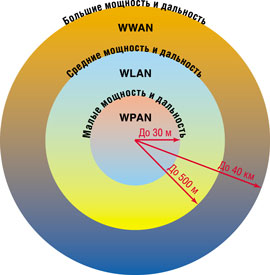
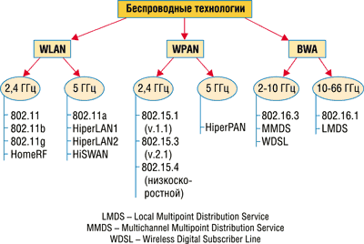
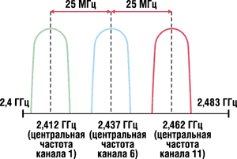
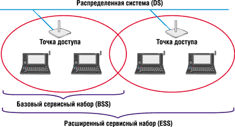
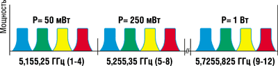
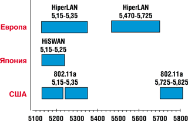
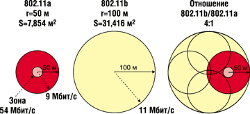

Ростислав Сергеев
Rsergeev@skpress.ru
На заре развития радиотехники термин "беспроводный" (wireless) использовался для обозначения радиосвязи в широком смысле этого слова, т. е. буквально во всех случаях, когда передача информации осуществлялась без проводов. Позже это толкование практически вышло из обращения, и "беспроводный" стало употребляться как эквивалент термину "радио" (radio) или "радиочастота" (RF - radio frequency). Сейчас оба понятия считаются взаимозаменяемыми в том случае, если речь идет о диапазоне частот от 3 кГц до 300 ГГц. Тем не менее термин "радио" чаще используется для описания уже давно существующих технологий (радиовещание, спутниковая связь, радиолокация, радиотелефонная связь и т. д.). А термин "беспроводный" в наши дни принято относить к новым технологиям радиосвязи, таким, как микросотовая и сотовая телефония, пейджинг, абонентский доступ и т. п.
Различают три типа беспроводных сетей (рис. 1): WWAN (Wireless Wide Area Network), WLAN (Wireless Local Area Network) и WPAN (Wireless Personal Area Network); соответствующие технологии имеют как сходные черты, так и различия. Первый тип - WWAN (внешний круг на рис. 1) - применяется для сетей сотовой связи: GSM, GPRS, CDMA, UMTS и т. д. Для таких сетей характерны большие зоны обслуживания (до 40 км) и относительно высокое энергопотребление терминалов. Второй тип, WLAN (средний круг на рис. 1), используется, когда сети предназначены для обслуживания небольших территорий (зданий, предприятий), где можно обойтись относительно короткими линиями связи (до 500 м). Сети WPAN (внутренний круг) отличает применение передатчиков с очень малым энергопотреблением и радиусом действия (до 30 м), которые могут передавать информацию от портативных компьютеров, сотовых телефонов, видеокамер и различных бытовых устройств. Именно два последних типа в последнее время чаще всего называют беспроводными сетями, тогда как за сотовой связью прочно закрепился термин "мобильная".
|  | Рис. 1. Три типа беспроводных сетей.
|
При построении сетей WLAN и WPAN, а также систем широкополосного беспроводного доступа (BWA - Broadband Wireless Access) применяются сходные технологии. Ключевое различие между ними (рис. 2) - диапазон рабочих частот и характеристики радиоинтерфейса. Сети WLAN и WPAN работают в нелицензионных диапазонах частот 2,4 и 5 ГГц, т. е. при их развертывании не требуется частотного планирования и координации с другими радиосетями, работающими в том же диапазоне. Сети BWA используют как лицензионные, так и нелицензионные диапазоны (от 2 до 66 ГГц). В настоящей статье рассматривается только один тип сетей - WLAN.
|  | Рис. 2. Классификация беспроводных технологий.
|
RadioEthernet
Начало разработке сетей беспроводной связи было положено в 1990 г., когда комитет по стандартам IEEE 802 сформировал рабочую группу 802.11. Работы были завершены через семь лет, и в июне 1997 г. был одобрен первый стандарт 802.11 (в России известен как RadioEthernet). Скорость передачи информации для него составляет 1-2 Mбит/с, а рабочий диапазон (2,4 ГГц) в большинстве стран не подлежит лицензированию. Более подробно основные направления развития стандарта 802.11 рассмотрены в статье "Лики RadioEthernet" ("BYTE/Россия", № 5/2002, стр. 46).
Тем не менее не во всех странах выделенные нелицензируемые полосы этого диапазона частот одинаковы (табл. 1), что создает определенные проблемы. В стандарте предложены три спецификации физического уровня, включающие расширение спектра с помощью прямой последовательности (DSSS), скачкообразной перестройки частоты (FHSS) и диффузионного ИК-излучения. Разработчики стандарта исходили из того, что пользователи смогут выбрать метод, наиболее подходящий им по цене оборудования, производительности и типу используемых приложений.
Таблица 1. Выделенные полосы частот диапазона 2,4 ГГц в разных странах
| Регион | Полоса частот, МГц |
| США | 2400-2483,5 |
| Европа | 2400-2483,5 |
| Япония | 2471-2497 |
| Франция | 2446,5-2483,5 |
| Испания | 2445-2475 |
Первоначально технология RadioEthernet не была воспринята на рынке так, как ожидали ее создатели, поскольку скорость передачи 2 Мбит/с не смогла удовлетворить растущим требованиям к полосе пропускания. Спустя два года, в 1999 г., на свет появились сразу два новых стандарта - 802.11b и 802.11a. Стандарт 802.11b известен под торговой маркой Wi-Fi (Wireless Fidelity), а 802.11a - Wi-Fi5. Ключевым отличием спецификаций 802.11b стало повышение скорости передачи до 11 Мбит/с за счет использования новой технологии, названной "манипуляция дополнительным кодом", CCK (Complementary Code Keying). На физическом уровне в нем определен только один метод передачи - DSSS. От применения технологии FHSS пришлось отказаться, поскольку она не позволяла в рамках этой модели превысить скорость 3 Мбит/с. Главным преимуществом DSSS (по сравнению с FHSS) считается устойчивая работа сети в условиях многолучевого распространения радиоволн. Однако данный метод по сравнению с FHSS более чувствителен к эффекту "ближний-дальний", т. е. сильные сигналы от близко расположенных станций могут подавлять слабые сигналы от удаленных.
Данные передаются в диапазоне 2,4 ГГц со скоростью 1, 2, 5,5 и 11 Мбит/с с использованием модуляций BPSK и QPSK. В полосе частот 2,400-2,48354 ГГц можно организовать до 14 каналов. В качестве примера на рис. 3 показан частотный план с тремя не перекрывающимися по полосе каналами: 1 (2,412 ГГц), 6 (2,437 ГГц) и 11 (2,462 ГГц). При такой расстановке удается не только снизить взаимные помехи между каналами, но и упростить управление.
|  | Рис. 3. Распределение полос частот в диапазоне 2,4 ГГц (802.11).
|
Дальность действия абонентского оборудования стандарта 802.11b не превышает 100 м и зависит от скорости передачи, уровня и характера помех, а также от требований к качеству обслуживания. Чтобы обеспечить приемлемое качество соединения, в спецификациях предусмотрена возможность автоматического снижения скорости информационного обмена. Обратная совместимость обеспечивается только для базового стандарта 802.11 DSSS (работа с FHSS и в ИК-диапазоне не поддерживается).
В качестве ключевого недостатка беспроводных технологий часто называют меньшую, чем для сети Ethernet, пропускную способность. Даже для канала передачи с быстродействием 11 Мбит/с реально достижимая скорость не превышает 6-7 Мбит/с. Этого явно недостаточно для работы высокоскоростных приложений, поэтому развитие стандарта 802.11 продолжалось.
В марте 2000 г. была сформирована рабочая группа 802.11g, в задачи которой первоначально входило повышение скорости передачи с 11 до 22 Мбит/с в диапазоне частот 2,4 ГГц без ухудшения других характеристик исходного стандарта 802.11b. В процессе борьбы за скорость были рассмотрены два конкурирующих метода: многочастотная ортогональная модуляция OFDM (Orthogonal Frequency Division Multiplexing), предложенная фирмой Intersil (http://www.intersil.com), и одночастотная модуляция, основанная на двоичном сверточном кодировании пакетов (PBCC - Packet Binary Convolution Coding), разработанная корпорацией Texas Instruments (http://www.ti.com).
Проект стандарта 802.11g был одобрен в ноябре 2001 г. и содержал компромиссное решение. В качестве базовых использовались две технологии: OFDM и CCK. Режим OFDM гарантировал передачу данных со скоростью до 54 Мбит/с, а кодовая манипуляция CCK обеспечивала обратную совместимость со стандартом 802.11b.
Кроме обязательных методов передачи, в стандарте 802.11g предложены две дополнительные технологии широкополосного доступа (PBCC и CCK/OFDM), которые могут быть реализованы в базовом оборудовании по желанию заказчика. Первая из них основана на сверточном кодировании и обеспечивает скорость передачи до 33 Мбит/с (первоначально 22 Мбит/с). Другая, основанная на гибридном методе CCK/OFDM, позволяет передавать служебную информацию с использованием модуляции CCK, а полезную - при помощи OFDM (54 Мбит/с).
Архитектура
Базовый стандарт 802.11 определяет два типа сетей, различающихся конфигурацией: фиксированной (Infrastructure Network) и произвольной (Ad Hoc Network) структуры. На их основе строятся различные варианты топологии: "точка-точка", "точка-много точек", "каждый с каждым", "звезда", "мост" и т. д.
Сеть с фиксированной структурой (рис. 4) состоит из терминалов (обычно компьютеров с беспроводным сетевым адаптером) и базовых станций, получивших название точек доступа (AP - Access Point). В такой сети точка доступа выполняет роль моста между беспроводной и кабельной сетями, обеспечивая прием, накопление и передачу данных абонентам. К магистральной линии точки доступа подключаются с помощью стандартной проводной линии Ethernet. Подобно сотовым ячейкам, множество точек доступа образуют систему связи, которая обеспечивает последовательную ретрансляцию данных из одной ячейки в другую.
|  | Рис. 4. Типовая архитектура беспроводной сети c точками доступа.
|
Дальность действия приемопередатчиков зависит от высоты подъема антенны и обычно составляет от 20 до 500 м. Одна точка доступа обеспечивает обслуживание от 15 до 250 абонентов в зависимости от конфигурации сети и технологии доступа. Увеличить емкость сети можно, просто добавив новые точки доступа, при этом не только расширяется зона обслуживания, но и снижается вероятность перегрузки. Для непрерывной связи при передвижении абонента (хэндовера) точки доступа должны образовывать перекрывающиеся смежные соты. Конфигурация, состоящая из одной точки доступа вместе с находящимися в радиусе ее действия терминалами, получила название базового сервисного набора (BSS - Basic Service Set). Несколько перекрывающихся BSS образуют расширенный сервисный набор (ESS - Extended Service Set), позволяющий построить подсеть. Расстояние между станциями и точками доступа обычно не превышает 100 м (оно зависит от скорости передачи), а полная протяженность WLAN ограничена длиной магистральной линии проводной распределенной сети.
Требования к точкам доступа определены в документе ESSID (Extended Service Set Identification), который является частью стандарта 802.11. Клиентам необходимо задавать конфигурацию сети в соответствии с правилами ESSID, определяющими процедуру установления соединения. Точки многостанционного доступа одной подсети должны иметь одинаковый идентификатор ESSID (это нужно для хэндовера).
В корпоративных сетях со множеством офисов возможна и другая схема организации связи. Служащие, имеющие карты свободного доступа (wild card), могут устанавливать соединение с любой точкой доступа вне зависимости от используемой в ней схемы идентификации (обычно выбирается такая точка доступа, от которой принимается максимальный сигнал). Отметим, что использование карт свободного доступа снижает уровень безопасности сети. Поэтому в таком режиме работы желательно предусмотреть дополнительные методы защиты.
Сеть с произвольной структурой (ad hoc) позволяет организовать взаимный обмен информацией непосредственно между терминалами без помощи специальных точек доступа. В стандарте 802.11 такая конфигурация беспроводной сети получила называется "независимый базовый набор обслуживания" (IBSS - Independent Basic Service Set). Эта архитектура широко используется в беспроводных сетях WPAN, где топологию соединения устройств сложно предсказать заранее.
К высоким частотам
Как известно, производители беспроводного оборудования в США, Европе и Азии сегодня готовятся к переходу в нелицензионный диапазон 5 ГГц. Этот диапазон менее загружен, чем 2,4 ГГц, а следовательно, свободнее от помех. Суммарная ширина доступного спектра в нем примерно в четыре раза выше (рис. 5), чем в диапазоне 2,4 МГц (83 МГц).
|  | Рис. 5. Частотный план, используемый в 802.11а.
|
Ожидается, что здесь конкурентная борьба развернется между двумя технологиями: 802.11а и семейством стандартов HiperLAN (High Performance Radio Local Area Network), которое разрабатывается ETSI в рамках проекта BRAN (Broadband Radio Access Networks - широкополосные сети радиодоступа).
В настоящее время одобрены две модификации стандарта: HiperLAN1 and HiperLAN2. Стандарт HiperLAN1 основан на использовании гауссовой манипуляции (GMSK - Gaussian Minimum Shift Keying) и поддерживает передачу данных со скоростью до 20 Мбит/с, а его более совершенная версия, HiperLAN2, - на методе модуляции OFDM, который обеспечивает скорость передачи до 54 Мбит/с.
Стандарт HiSWAN (High Speed Wireless Access Network) разработан рабочей группой MMAC (Multimedia Mobile Access Communications), входящей в Ассоциацию ARIB (Япония). Стандарт основан на спецификации HiperLAN2 и адаптирован для работы в Японии, поэтому вряд ли составит серьезную конкуренцию двум первым.
Одно из главных достоинств новых технологий - увеличение скорости передачи информации. Уже сейчас в стандартах 802.11a и HiperLAN2 она достигает 54 Мбит/с, и это не предел. По мнению специалистов, в ближайшее время скорость можно увеличить до 72 Мбит/с, а в перспективе сделать сопоставимой со значениями, характерными для технологии ATM (155 Мбит/с).
Высокая скорость передачи в обоих стандартах может быть реализована лишь на небольших расстояниях от точки доступа, причем и там, и там используется технология OFDM. Поэтому для повышения дальности связи в стандарте 802.11а предусмотрена возможность работы с более низкими скоростями: 6, 9, 12, 18, 24, 36 и 48 Мбит/с (табл. 2), что достигается за счет применения различных методов модуляции сигналов - от простейших BPSK и QPSK до многопозиционной квадратурной амплитудной модуляции QAM. Аналогичные ограничения есть и для HiperLAN2, но в этом стандарте исключена скорость 48 Мбит/с.
Таблица 2. Зависимость скорости передачи информации от типа модуляции и способа кодирования (стандарт 802.11а)
| Скорость передачи, Мбит/с | Тип модуляции | Скорость кодиро-вания, R | Кодирован-ных битов на поднесущую | Кодирован-ных битов на символ OFDM | Информа-ционных битов на символ OFDM |
| 6 | BPSK | 1/2 | 1 | 48 | 24 |
| 9 | BPSK | 3/4 | 1 | 48 | 36 |
| 12 | QPSK | 1/2 | 2 | 96 | 48 |
| 18 | QPSK | 3/4 | 2 | 96 | 72 |
| 24 | 16-QAM | 1/2 | 4 | 192 | 96 |
| 36 | 16-QAM | 3/4 | 4 | 192 | 144 |
| 48 | 64-QAM | 2/3 | 6 | 288 | 192 |
| 54 | 64-QAM | 3/4 | 6 | 288 | 216 |
Однако, несмотря на сходные алгоритмы обработки сигналов и набор скоростей передачи, технологии 802.11a и HiperLAN2 принципиально различаются по способу организации связи на физическом и MAC-уровнях. Стандарт 802.11a в диапазоне 5 ГГц использует полосу частот шириной 300 МГц, разделяя ее на три участка по 100 МГц каждый: 5,15-5,25 ГГц (нижний), 5,25-5,35 ГГц (средний) и 5,725-5,825 ГГц (верхний). В каждом из них могут быть организованы четыре неперекрывающихся канала, итого во всей полосе - 12 частотных каналов. В каждом из участков спектра допускается своя максимальная мощность излучения: 50 мВт (нижний), 250 мВт (средний) и 1 Вт (верхний) (см. рис. 5)
В США и Канаде нижний диапазон используется только для внутренней (внутриофисной) связи, средний - для внутренней и наружной, а верхний - только для наружной. В Европе свободны лишь нижний и средний диапазоны частот, а в Японии - один нижний. Кроме того, в Европе разрешено использовать диапазон 5,47-5,725 ГГц (рис. 6). Очевидно, что такое положение дел порождает проблемы с сертификацией стандарта 802.11a в странах Европы и Японии.
|  | Рис. 6. Распределение полос частот в диапазоне 5 ГГц в разных регионах.
|
Другое отличие между конкурирующими технологиями состоит в том, что в 802.11a используется метод доступа, заимствованный у сети Ethernet (CSMA-CA), а спецификация HiperLAN2 с самого начала была ориентирована на режим асинхронной передачи и временное разделение каналов (TDMA).
Попытки выработать требования к единому стандарту в диапазоне 5 ГГц предпринимались неоднократно, но пока не увенчались успехом. Тем не менее внушает определенный оптимизм тот факт, что в обоих стандартах используется одна и та же технология широкополосного доступа OFDM, следовательно, вполне возможно создание двухрежимных терминалов.
Говоря о диапазоне 5 ГГц, не следует забывать, что энергия сигналов этого спектра более интенсивно поглощается стенами зданий и другими препятствиями, следовательно, потери при распространении сигналов в этом диапазоне выше. По этой причине радиус действия станций при прочих равных условиях вдвое меньше, чем для диапазона 2,4 ГГц; иными словами, для организации такой же по покрытию сети потребуется большее количество точек доступа, чем для сети на базе стандарта 802.11b (рис. 7). Для организации автоматического хэндовера (переключения) между диапазонами 2,4/5 ГГц производители предлагают универсальные наборы микросхем, обеспечивающие интерфейс с любым из стандартов 802.11a/b.
|  | Рис. 7. Сравнение зон обслуживания 802.11b и 802.11а.
|
Продолжение следует
Основные характеристики стандартов 802.11x, Bluetooth, HomeRF и HiperLAN2
|